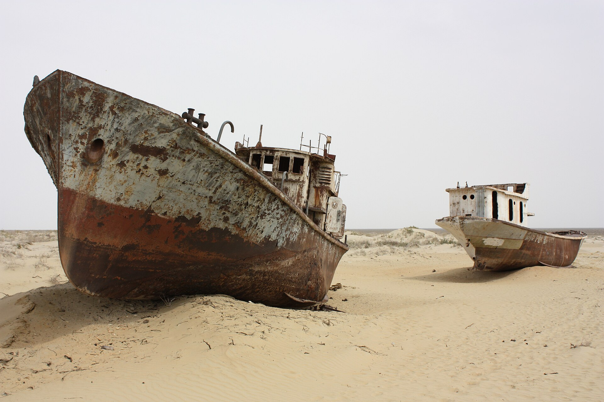

Qoraqalpogʻistonning konstitutsiyaviy maqomi: 1990–1993-yillar
Qoraqalpogʻiston Respublikasi 1936-yil 5-dekabrda RSFSR tarkibidan Oʻzbekiston SSR tarkibiga oʻtkazilgan. 1990-yil 14-dekabrda u Davlat suvereniteti toʻgʻrisidagi deklaratsiyani qabul qildi. Oʻzbekistonning 1992-yil 8-dekabrda qabul qilingan Konstitutsiyasi Qoraqalpogʻistonni Oʻzbekiston tarkibidagi suveren respublika sifatida belgiladi hamda uning oʻz Konstitutsiyasi borligini va umumxalq referendumi asosida ajralib chiqish huquqini mustahkamladi. 1993-yilda ikki respublika oʻrtasida 20 yillik shartnoma imzolandi. Faqat tasdiqlangan faktlar va aniq sanalar asosida.

Qoraqalpogʻiston Respublikasining Oʻzbekiston tarkibidagi konstitutsiyaviy maqomi 1990–1993-yillarda shakllangan. Quyida bu jarayon — 1936-yilgi hududiy oʻtkazish, 1990-yilgi suverenitet deklaratsiyasi, 1992-yilgi Oʻzbekiston Konstitutsiyasi normalari va 1993-yilgi ikki tomonlama shartnoma — faqat tekshirilgan rasmiy va qomusiy manbalar asosida, aniq sanalar bilan bayon etiladi.
Geografiya va Orol fojiasi konteksti
Qoraqalpogʻiston Oʻzbekistonning shimoli-gʻarbiy qismida joylashgan, maydoni taxminan 166,6 ming kv. km. Poytaxti — Nukus shahri. Hududga Ustyurt platosi va Orol dengizining janubiy qismi kiradi. XX asrning ikkinchi yarmida Amudaryo suvidan sugʻorish uchun keng foydalanilishi natijasida Orol dengizi qurib bordi; bu — mintaqadagi suv tanqisligi, qishloq xoʻjaligi va sogʻliqqa taʼsir koʻrsatgan yirik ekologik inqirozning asosiy sababidir. Bu holat Qoraqalpogʻiston maqomi muhokamalarining doimiy fonini tashkil etadi.
1936-yil: Oʻzbekiston SSR tarkibiga oʻtkazish
Qoraqalpoq hududi 1932-yil 20-martda avtonom viloyatdan Qoraqalpoq Avtonom Sovet Sotsialistik Respublikasiga (ASSR) aylantirilgan va Rossiya SFSR (RSFSR) tarkibida boʻlgan. 1936-yil 5-dekabrda — SSSRning yangi Konstitutsiyasi qabul qilingan kuni — Qoraqalpoq ASSR RSFSR tarkibidan Oʻzbekiston SSR tarkibiga oʻtkazildi. Oʻshandan buyon Qoraqalpogʻiston Oʻzbekiston tarkibida qolgan.
1990-yil 14-dekabr: Davlat suvereniteti deklaratsiyasi
1990-yil 14-dekabrda Qoraqalpoq ASSR Davlat suvereniteti toʻgʻrisidagi deklaratsiyani qabul qildi. Bu qadam Sovet Ittifoqida qayta qurish davridagi koʻplab ittifoqdosh va avtonom respublikalarning suverenitet eʼlon qilish toʻlqini (“suverenitetlar paradi”) doirasida boʻlgan. Oʻzbekiston oʻz mustaqilligini 1991-yil 31-avgustda eʼlon qildi; shundan soʻng Qoraqalpoq ASSR Qoraqalpogʻiston Respublikasi deb nomlandi.
1992-yilgi Oʻzbekiston Konstitutsiyasi: suveren respublika
Oʻzbekiston Respublikasining Konstitutsiyasi 1992-yil 8-dekabrda qabul qilindi. Unda Qoraqalpogʻistonga alohida bob (70–75-moddalar) bagʻishlangan. 70-moddaga koʻra, suveren Qoraqalpogʻiston Respublikasi Oʻzbekiston Respublikasi tarkibiga kiradi va uning suvereniteti Oʻzbekiston tomonidan muhofaza etiladi. 72-moddaga koʻra, Oʻzbekiston qonunlari Qoraqalpogʻiston hududida majburiydir. 73-moddaga koʻra, Qoraqalpogʻiston hududi va chegaralari uning roziligisiz oʻzgartirilishi mumkin emas.
Oʻz Konstitutsiyasi, shartnomalar va ajralib chiqish huquqi
Konstitutsiyaga koʻra, Qoraqalpogʻiston oʻz Konstitutsiyasiga ega (u Oʻzbekiston Konstitutsiyasiga zid boʻlmasligi lozim). 75-moddaga binoan, Oʻzbekiston va Qoraqalpogʻiston oʻrtasidagi oʻzaro munosabatlar Oʻzbekiston Konstitutsiyasi doirasidagi shartnomalar va bitimlar bilan tartibga solinadi, nizolar esa murosa yoʻli bilan hal etiladi. 74-moddaga koʻra, Qoraqalpogʻiston Qoraqalpogʻiston xalqining umumxalq referendumi asosida Oʻzbekiston tarkibidan ajralib chiqish huquqiga ega.
1993-yilgi ikki tomonlama shartnoma
1993-yilda Oʻzbekiston va Qoraqalpogʻiston oʻrtasida oʻzaro munosabatlarni tartibga soluvchi davlatlararo shartnoma imzolandi. Manbalarda bu shartnoma 20 yil muddatga tuzilgani qayd etiladi. Shartnoma Qoraqalpogʻistonning Oʻzbekiston tarkibida boʻlishini va referendum asosida ajralib chiqish huquqini Konstitutsiyaga muvofiq tasdiqladi.
Jokargʻi Kenes va Qoraqalpogʻiston Konstitutsiyasi
Qoraqalpogʻiston oʻz Konstitutsiyasini 1993-yil 9-aprelda qabul qildi; u Qoraqalpogʻistonni Oʻzbekiston tarkibidagi suveren respublika sifatida belgilaydi va umumxalq referendumi asosida ajralib chiqish normasini oʻzida aks ettiradi. Respublikaning oliy vakillik va qonun chiqaruvchi organi — Jokargʻi Kenes (Qoraqalpogʻiston parlamenti). Shu tariqa 1990–1993-yillarda Qoraqalpogʻistonning Oʻzbekiston tarkibidagi konstitutsiyaviy maqomi — oʻz Konstitutsiyasi va oʻz parlamentiga ega suveren respublika sifatida — huquqiy jihatdan rasmiylashtirildi.
Manbalar
- Uzbekistan 1992 (rev. 2011) Constitution — Chapter XVII, Articles 70–75 (Constitute Project)
- Karakalpak Autonomous Soviet Socialist Republic — 1936 transfer, 1990 declaration (Wikipedia)
- Karakalpakstan — geography, Nukus, status, Aral Sea (Wikipedia)
- The curious case of the Republic of Karakalpakstan — 1993 treaty (The Foreign Policy Centre)
- Karakalpakstan: a little-known autonomy in post-Soviet Central Asia (ICELDS)